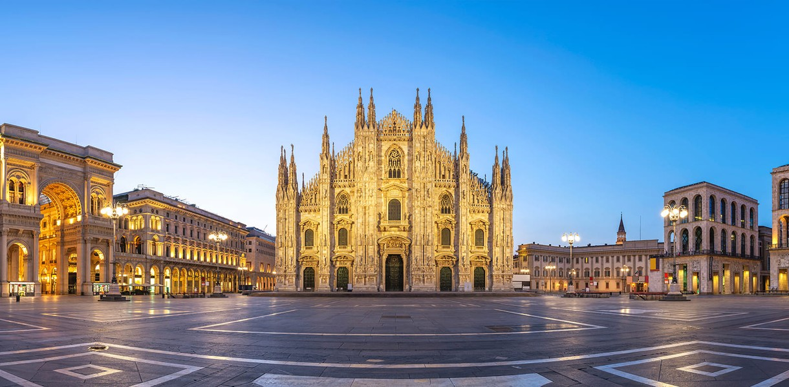

Это страница про Италию
Чем мне нравится Италия?
- Там комфортно
- Много разнообразных мест
- Много развлечений
я побывал несколько городах Италии Больше всего мне нравится город Милан
Описание Милана:
Милан - столица моды и бизнеса, самый стильный, дорогой и богатый город Италии.
Мнение о том, что Милан является модным и финансовым центром Италии, весьма распространено.
Но за всеми банками и бутиками города таятся загадки и изюминки, присущие исключительно Милану.
Видео про гид по Милану
Гимн Италии
Территория Италии